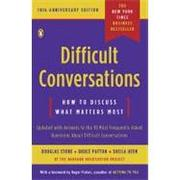
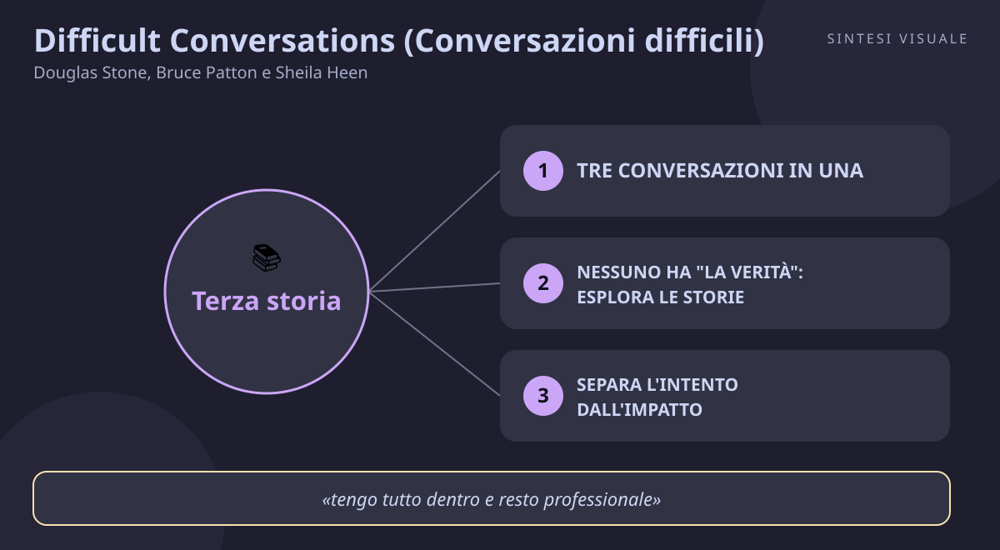

Home / Libri / Difficult Conversations (Conversazioni difficili)

Difficult Conversations (Conversazioni difficili)
Douglas Stone, Bruce Patton e Sheila Heen · Negoziazione e comunicazione
«Difficult Conversations (Conversazioni difficili)»
- Tre conversazioni
- Intento e impatto
- Colpa e contributo
- Terza storia
📘Riassunto
La scintilla centrale. Ogni conversazione difficile sembra parlare di fatti — chi ha detto cosa, chi ha ragione — ma in realtà sotto ogni conversazione difficile ce ne sono tre che scorrono in parallelo: quella sui fatti, quella sulle emozioni e quella sull'identità. Finché non le distingui, litighi sui fatti mentre il vero scontro avviene altrove, e nessuna soluzione regge.
La struttura logica. La prima parte smonta le tre conversazioni: la disputa su "cosa è successo davvero" (storie diverse, non verità contro bugie), la conversazione sulle emozioni (che non sono un disturbo, sono il nocciolo) e quella sull'identità (cosa la situazione dice di me: sono competente? sono una brava persona? sono degno di essere amato?). La seconda parte dà gli strumenti per uscirne: separa l'intento dall'impatto, abbandona la colpa e mappa il contributo di ciascuno, attraversa le emozioni invece di reprimerle, metti in sicurezza la tua identità. La terza parte insegna a condurre la conversazione vera: chiarisci il tuo scopo, parti dalla "terza storia" (il racconto di un osservatore neutrale), ascolta dal di dentro, esprimiti in prima persona e guida verso la soluzione dei problemi.
Il punto di svolta. Il libro rovescia l'obiettivo stesso della conversazione: non convincere l'altro che hai ragione, ma trasformare lo scontro in una learning conversation, una conversazione di apprendimento in cui entrambi scoprite qualcosa che da soli non vedevate. Quando smetti di difendere la tua storia e inizi a esplorare la sua, l'altro abbassa le difese — ed è lì che il problema si risolve davvero.
L'eredità oggi. Nato dentro l'Harvard Negotiation Project che ci aveva dato Getting to Yes, questo libro ne è il gemello emotivo: se Getting to Yes insegna a separare le persone dal problema, Difficult Conversations insegna che le persone sono il problema e insieme la soluzione. È diventato un testo di riferimento per manager, mediatori, medici e insegnanti, e anticipa di vent'anni tutto ciò che oggi chiamiamo intelligenza emotiva applicata al lavoro.
💡Concetti chiave
- Tre conversazioni in una: ogni dialogo difficile è fatto di fatti, emozioni e identità — e si vince solo affrontandole tutte e tre.
- Nessuno ha "la verità": ognuno vive una storia diversa, e la tua non è più vera della sua.
- Separa l'intento dall'impatto: il dolore che provi è reale anche se l'altro non voleva ferirti.
- Basta colpe, cerca i contributi: chiediti cosa ha alimentato il problema da entrambe le parti, non chi è il colpevole.
- Vivi le emozioni o ti possederanno: ciò che non esprimi con onestà trapela comunque, in tono, gesti e frecciate.
- Parti dalla terza storia: apri la conversazione come la racconterebbe un osservatore neutrale, non come un'accusa.
📖1. Tre conversazioni in una
- Definizione ogni conversazione difficile contiene tre livelli intrecciati: la conversazione su "cosa è successo" (fatti e torti), la conversazione sulle emozioni (ferita, rabbia, delusione, paura) e la conversazione sull'identità (cosa l'accaduto dice di me come persona). Gli errori tipici — dare per scontato di sapere tutto, leggere cattive intenzioni, attribuire colpe — nascono dal confondere i tre livelli.
- Esempio il tuo capo critica il tuo progetto in riunione. Discuti sui fatti ("ma i dati erano giusti!"), mentre dentro ribollono vergogna ("mi ha umiliato") e panico identitario ("forse non sono all'altezza di questo ruolo"). Finché rispondi solo ai fatti, non risolvi nulla.
- Come applicarlo prima di ogni conversazione tesa, preparati su tre righe: cosa è successo secondo me e cosa potrebbe essere successo secondo l'altro; quali emozioni provo davvero; quale domanda sulla mia identità mi sta pungendo (competenza? bontà? amore?). Arriverai al dialogo già più lucido.
- Errore comune credere che le emozioni siano "fuori luogo" in una discussione professionale e cercare di ragionare a freddo mentre dentro ribolli: la freddezza finta rende solo più rigidi.
- Collegamento si lega all'intelligenza emotiva di Daniel Goleman (autoconsapevolezza prima dell'autoregolazione) e al principio di Getting to Yes di separare le persone dal problema.
📖2. Nessuno ha "la verità": esplora le storie
- Definizione in quasi ogni conflitto entrambe le persone vedono solo una parte della realtà: informazioni diverse, interpretazioni diverse, valori diversi. Litigare su chi ha ragione è una trappola, perché le storie non si decidono per alzata di mano: si esplorano per capire cosa manca alla tua.
- Esempio tu e un collega litigate perché "non ti ha avvisato" di una scadenza spostata. Per te è menefreghismo; per lui, ti aveva mandato un messaggio che non hai letto e ha dato per scontato che bastasse. Nessuno dei due mente: avete due storie incomplete.
- Come applicarlo sostituisci le frasi-verdetto ("il fatto è che tu...") con frasi-curiosità ("aiutami a capire come l'hai vista tu..."). Chiediti sempre: quale informazione potrebbe avere l'altro che io non ho?
- Errore comune partire dall'assunto silenzioso "io ho ragione, tu hai torto" e usare tutto il dialogo solo per dimostrarlo: l'altro lo percepisce in dieci secondi e smette di ascoltare.
- Collegamento richiama la maieutica socratica e l'ascolto attivo di Dale Carnegie: chi fa domande governa la conversazione meglio di chi sentenzia.
📖3. Separa l'intento dall'impatto
- Definizione l'impatto che subisci (mi sono sentito sminuito) non dimostra l'intento dell'altro (voleva sminuirmi). L'errore più diffuso nelle conversazioni tese è proprio questo: deduciamo cattive intenzioni da un brutto impatto, e da lì giudichiamo l'intera persona.
- Esempio un amico non ti invita a una cena e concludi che ti sta escludendo di proposito. Poi scopri che la cena era organizzata da altri con posti limitati e lui non c'entrava nulla: il tuo dolore era reale, ma la sua "cattiveria" era una tua invenzione.
- Come applicarlo quando racconti l'impatto, fallo senza attribuire intenzioni: invece di "mi hai ignorato di proposito", prova "quando non ho ricevuto risposta mi sono sentito trascurato, e vorrei capire cos'è successo". Poi chiedi davvero quale fosse l'intenzione.
- Errore comune dire "lo so che l'hai fatto apposta": chi si sente accusato nelle intenzioni difende quelle e non ascolta più nulla dell'impatto che ha causato.
- Collegamento dialoga con la terapia cognitivo-comportamentale di David Burns (Feeling Good): tra evento e reazione c'è sempre un pensiero automatico, e spesso quel pensiero è "l'ha fatto apposta".
📖4. Basta colpe, cerca i contributi
- Definizione la colpa chiede "chi ha sbagliato?", il contributo chiede "cosa ha fatto ciascuno — me compreso — per alimentare questa situazione, e come ne usciamo?". La colpa guarda indietro e punisce; il contributo guarda avanti e risolve, perché nei problemi veri quasi mai c'è un solo responsabile.
- Esempio un progetto in ritardo e tu accusi il fornitore. Mappando il contributo scopri però che anche tu hai mandato le specifiche in ritardo di una settimana e non hai mai chiesto aggiornamenti: il fornitore ha contribuito al 60%, tu al 40%. Parlare solo del suo 60% non eviterà il prossimo ritardo.
- Come applicarlo disegna il "sistema del contributo": elenca su carta cosa ha fatto l'altro e cosa hai fatto tu (anche per omissione: non aver chiesto, non aver chiarito, aver dato per scontato). Porta nella conversazione prima il tuo contributo: disarma e invita alla reciprocità.
- Errore comune ammettere il proprio contributo solo come esca ("ok, ho sbagliato io, MA tu..."): è una confessione tattica e l'altro la annusa subito.
- Collegamento si intreccia con la mentalità dell'artigiano di Cal Newport e con il principio win-win di Stephen Covey: i problemi condivisi si risolvono, quelli scaricati si ripetono.
📖5. Vivi le emozioni o ti possederanno
- Definizione le emozioni non sono il rumore di fondo della conversazione, ne sono il cuore. Tentarle di reprimerle non le spegne: le fa trapelare nel tono di voce, nel sarcasmo, nella rigidità — o esplodere nel momento peggiore. Vanno riconosciute, nominate con precisione e condivise senza trasformarle in accuse.
- Esempio devi dire a un collaboratore che il suo lavoro non basta. Se fingi distacco burocratico, il gelo nella voce comunica disprezzo peggio di qualsiasi parola; se invece dici "questa conversazione mi mette a disagio perché ti stimo e non voglio ferirti, ma devo essere onesto", la stessa critica diventa sopportabile e credibile.
- Come applicarlo prima del dialogo, scava sotto l'etichetta facile ("sono arrabbiato") fino al fascio vero (delusione? paura di perdere stima? senso di colpa?). Durante, descriviti in prima persona ("mi sento...") senza giudicare l'altro ("sei un..."). Riconosci anche le sue emozioni: sentirsi compresi abbassa la temperatura più di qualsiasi argomento.
- Errore comune confondere sfogo e condivisione: vomitare rabbia addosso all'altro non è "esprimere le emozioni", è usarle come arma, e produce solo contrattacco.
- Collegamento richiama l'agilità emotiva di Susan David (mostra ciò che provi e osservalo) e gli studi di Sapolsky sullo stress: le emozioni non elaborate restano nel corpo e avvelenano le conversazioni successive.
📖6. Parti dalla terza storia
- Definizione la "terza storia" è il racconto di come descriverebbe la situazione un osservatore neutrale e ben informato, che riconosce entrambe le prospettive senza dare ragione a nessuno. Cominciare da lì — invece che dalla tua accusa o dalla tua versione — invita l'altro a risolvere il problema con te invece di difendersi da te.
- Esempio invece di aprire con "non rispetti mai le scadenze che concordiamo" (la tua storia, che suona come un processo), apri con: "abbiamo visioni diverse su come gestire le scadenze dell'ultimo progetto, e vorrei capire la tua per trovare un modo che funzioni per entrambi" (la terza storia, che suona come un invito).
- Come applicarlo prepara l'apertura in tre mosse: descrivi il problema come differenza tra due prospettive, dichiara il tuo scopo positivo ("voglio trovare un accordo che regga"), invita esplicitamente l'altro a raccontare la sua versione per primo. Poi ascolta dal di dentro: parafrasa, chiedi, non ribattere subito.
- Errore comune usare la terza storia come maschera educata per poi tornare all'accusa dopo due minuti ("...comunque il fatto è che hai sbagliato tu"): l'altro capisce l'inganno e la fiducia crolla più di prima.
- Collegamento si collega alle domande calibrate di Chris Voss (Never Split the Difference) e al principio di Carnegie di cominciare sempre dall'altro: chi si sente ascoltato per primo, ascolta dopo.
💬Citazioni da ricordare
"Difficult conversations do not just involve feelings, they are at their very core about feelings." — Conta perché ribalta l'istinto più comune: trattare le emozioni come un disturbo da mettere da parte. Se la conversazione è difficile, è difficile per le emozioni che contiene: ignorarle significa ignorare il problema.
"As we argue vociferously for our view, we often fail to question one crucial assumption upon which our whole stance in the conversation is built: I am right, you are wrong." — Conta perché smaschera l'assunto invisibile che avvelena ogni litigio: la presunzione di possedere da soli tutta la verità. Metterlo in dubbio è il primo passo per trasformare lo scontro in scoperta.
"Feelings are too powerful to remain peacefully bottled. They will be heard one way or another, whether in leaks or bursts." — Conta perché spiega perché la strategia del "tengo tutto dentro e resto professionale" fallisce sempre: ciò che non dici con parole esce comunque dal tono, dagli sguardi e dagli scatti improvvisi.
🌍Esempi di oggi
- Il colloquio per l'aumento che rimandi da mesi. Temi di sembrare avido e di rovinare il rapporto col capo, così non chiedi nulla e accumuli rancore. Il libro direbbe: prepara le tre conversazioni (i tuoi risultati, la paura di sembrare ingrato, il dubbio "valgo davvero di più?") e apri dalla terza storia: "vorrei confrontarci su come vedi il mio contributo e su come allinearlo alla retribuzione".
- La lite serale su chi fa cosa in casa. Tu elenchi le faccende che hai fatto (fatti), ma sotto ci sono stanchezza e sensazione di non essere visto (emozioni), più il dubbio "sono un partner che conta qualcosa?" (identità). Finché litigate solo sui piatti da lavare, nessuno dei due si sentirà mai ascoltato davvero.
- Il cliente che lascia una recensione feroce. L'istinto è rispondere difendendosi punto per punto (chi ha ragione). L'approccio del libro è opposto: riconosci l'impatto ("capisco che l'attesa l'abbia messa in difficoltà"), separa intento e impatto senza accusare, mappa anche il tuo contributo e poi risolvi: quella risposta vale più di dieci recensioni positive.
🛠️Azioni pratiche
- Prepara la conversazione che stai evitando. Scegli un dialogo che rimandi (feedback, soldi, confini) e scrivi su carta le tre conversazioni: i fatti nelle due versioni, le tue emozioni vere, la domanda identitaria che ti punge. Solo questo esercizio dimezzerà la tua ansia.
- Fai una domanda di curiosità al posto di un verdetto. Nella prossima frizione, sostituisci una frase che comincia con "il fatto è che tu..." con una che comincia con "aiutami a capire come...". Osserva quanto cambia la reazione dell'altro.
- Apri dalla terza storia. Al prossimo disaccordo (lavoro, famiglia, amici), prova l'apertura neutrale: descrivi il problema come differenza di prospettive, dichiara lo scopo costruttivo e lascia parlare per primo l'altro. Annota cosa succede.
💎Da portare a casa
Non devi vincere la conversazione: devi capirla — perché dietro ogni scontro sui fatti c'è un'emozione da riconoscere e un'identità da proteggere, nella tua pelle come nella sua.
Vuoi approfondire? Rispondi in chat con il numero del concetto (1–6) che ti interessa di più e lo espandiamo insieme con altri esempi ed esercizi, oppure chiedimi un tema: negoziazione, gestione dei conflitti, feedback difficili, emozioni al lavoro, comunicazione di coppia, carriera...
📄
# Difficult Conversations (Conversazioni difficili) — Douglas Stone, Bruce Patton e Sheila Heen
Titolo: Difficult Conversations: How to Discuss What Matters Most · Autori: Douglas Stone, Bruce Patton e Sheila Heen (Harvard Negotiation Project) · Anno: 1999 (Viking Penguin; edizione aggiornata nel 2010 con le risposte alle dieci domande più frequenti)
Questo libro conta oggi perché le conversazioni che evitiamo sono quasi sempre quelle che decidono la qualità della nostra vita: chiedere un aumento, dire a un collega che il suo lavoro non va, affrontare un problema di coppia, dare un feedback scomodo a un figlio o a un amico. È utile a chiunque negozi, venda, gestisca persone o semplicemente conviva con altri esseri umani — quindi a tutti, ma in particolare a manager, commerciali, insegnanti, genitori e a chi sente di esplodere o di chiudersi proprio quando servirebbe parlare chiaro.
🖼️In un colpo d’occhio

Tocca l’immagine per ingrandirla.